The interface
This chapter describes the BIMopen interface style, the one BIMopen starts in, on the desktop and in the browser. The other looks, the Classic style and touch mode for tablets and phones, run the same commands with the same names; Interface styles shows them and tells how to switch.
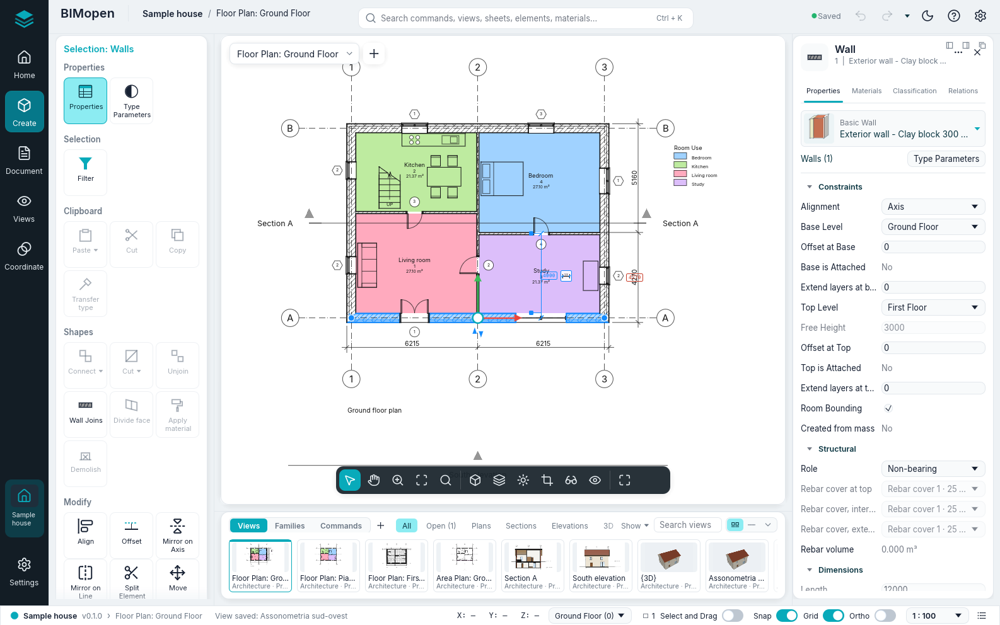
The window has these parts:
- the rail, on the left edge: BIMopen's mark, which opens the application menu, then Home, Create, Document, Views and Coordinate, and at the bottom the open project and Settings;
- the tool panel, beside the rail: the tools of the rail entry chosen, as cards of tiles;
- the top bar: the project and the active view, the command search, which is also the command line, the save state, Undo and Redo, the quick access tools, the light or dark theme, the ? menu and Options;
- the drawing area, in the middle: the views, each with its view selector at the top and the view bar at the bottom; while a tool works, the options strip runs over it;
- the element panel, on the right: the properties of the selection, or of the active view;
- the views and families strip, under the drawing area;
- the status bar, along the bottom.
The panels keep their width whatever they show: a long name is cut with «…» and its tooltip shows it whole. Drag the edge of the tool panel or of the element panel to make it wider or narrower; BIMopen remembers it for the next session. A click on the rail entry already chosen folds the tool panel, and a second click opens it again.
In Arabic the whole window is mirrored: the rail and the tool panel are on the right, the element panel on the left, and the strips read from right to left.
Application menu
BIMopen's mark, at the top of the rail, opens the application menu: the commands that work on the whole project. The Home entry of the rail shows the project with its levels, views, sheets and schedules, and reminds you that the file commands are in this menu.
| Item | What it does |
|---|---|
| New | Closes the current project and starts a new one from the default template: two levels with their plans, and the default types |
| Open… | Opens a .bimopen project, or imports an .rvt file (experimental: only the project name and the level names), chosen in a file dialog. In the browser, drag the file into the page instead |
| Sample project | Opens the sample house |
| Save Ctrl+S | Saves the project in its file; a project never saved asks for a name, like Save As… |
| Save As… | Saves the project in a new .bimopen file and goes on working on that file |
| Print… Ctrl+P | Prints sheets to PDF |
| Export ▸ Export IFC4… | Writes the model as an IFC4 file |
| Export ▸ Export plan SVG… | Writes the active plan as an SVG drawing |
| Export ▸ Export view PNG… | Writes the active view as a PNG image |
| Open Documents | Lists the open view windows; click one to bring it to the front |
| Options | Opens the Options dialog |
| Exit | Closes BIMopen (desktop only) |
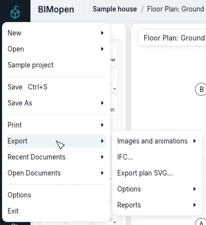
New, Open… and Sample project replace the current project without asking: save it first if you want to keep it.
Warning
Unsaved changes are lost when you choose New, Open… or Sample project. The top bar says Unsaved changes while there are changes to save.
Options
The gear at the right end of the top bar, or Application menu ▸ Options, opens Options. It has, among others, these settings:
| Setting | Values | Effect |
|---|---|---|
| User Interface ▸ Language | Italiano, English, Deutsch, Français, Español, العربية | The language of the whole interface, at once |
| User Interface ▸ Theme | Light, Dark | The colours of the window. Dark also turns on Invert background color. The sun or moon in the top bar switches it too |
| User Interface ▸ Interface | BIMopen, Classic | The interface style, see Interface styles |
| User Interface ▸ Touch mode | Automatic, Always, Never | The layout for touch screens, see Interface styles |
| Graphics ▸ Invert background color | on, off | Views with a dark background and light lines |
| Orientation cube ▸ Orientation cube size, Inactive opacity | Small, Medium, Large; 0 % to 100 % | The size of the cube, and how much it shows while the pointer is elsewhere |
| Orientation cube ▸ Keep scene upright | on, off | Dragging the cube never turns the model upside down; off, the view can pass over the top |
| Orientation cube ▸ Fit to view | on, off | A click on the cube also fits the model in the window |
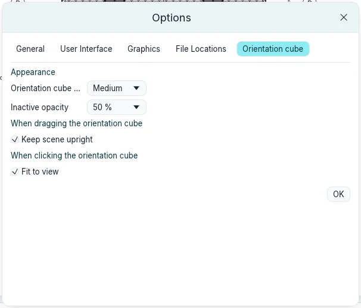
BIMopen remembers the language, the theme and the style the next time it starts.
Top bar and quick access tools
The top bar shows, from the left, BIMopen, the name of the project (a click opens Project information) and the active view; in the middle the command search; on the right:
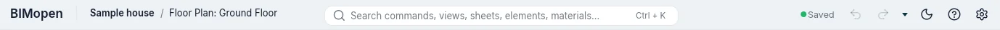
| Control | What it does |
|---|---|
| Saved / Unsaved changes | The save state; a click saves, Ctrl+S |
| Undo | Undoes the last change, Ctrl+Z. Greyed when there is nothing to undo |
| Redo | Redoes the change just undone, Ctrl+Y. Greyed when there is nothing to redo |
| The quick access tools | The tools you added, then the arrow of the quick access toolbar |
| The sun or the moon | Switches to the light or to the dark theme |
| ? | Help F1, Commands (every command of the command line, as typing help) and About (the version, the licence and the credits) |
| The gear | Options |
Right-click a tile of the tool panel and choose Add to Quick Access Toolbar: the tool shows in the top bar and starts from there whatever rail entry is open. Right-click it there for Remove from Quick Access Toolbar or Add Separator (a line to its right). The small arrow after the tools, Customize Quick Access Toolbar, lists the default tools (Open…, Save, Aligned dimension, Tag by Category, Text, 3D View, Section, Close Hidden, Switch View): tick one to show it, untick it to remove it. In the same menu, Customize Quick Access Toolbar… opens a window with the tools in order: Move Up and Move Down move the one selected, Add Separator puts a line after it, Remove takes it (or a line) away, OK applies. The tools are kept for the next sessions.
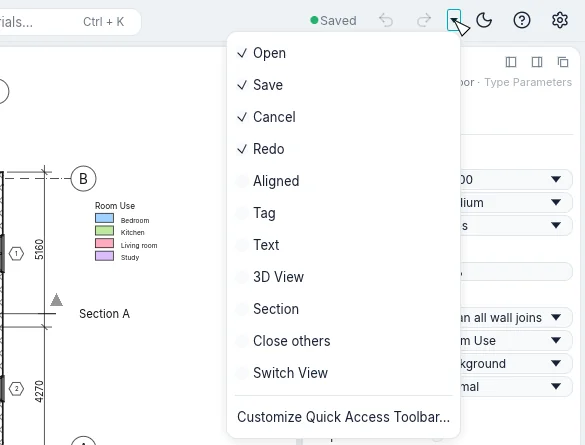
? ▸ Help (F1) opens this manual, in the language of the interface, in the browser. F1 opens the page of what you are doing: the open dialog, the tile under the mouse (its tip ends with Press F1 for more information) or the active tool.
Rail and tool panel
Each entry of the rail shows its tools in the tool panel, as cards: a card has a title, its groups, and in each group big tiles with an icon and a name. A tile with a small ▾ mark has a menu: a click on the tile starts the command, a click on the mark opens the menu with its variants. Resting the mouse on a tile shows what it does and, in brackets, the shortcut you can type to start it. The commands BIMopen does not run yet are greyed, and their tip says «Not available yet»; Level, Grid and Guide plane are greyed in a 3D view («Not available in the 3D view»).
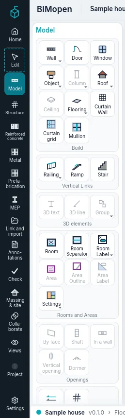
| Rail | Card | Group | Commands |
|---|---|---|---|
| Create | Modelling ▸ Architecture | Build | Wall ▾, Door, Window, Object ▾, Column ▾, Roof ▾, Ceiling, Flooring ▾, Curtain Wall, Curtain grid, Mullion |
| Vertical Links | Railing ▾, Ramp, Stair | ||
| 3D elements | 3D text, 3D line, Group ▾ | ||
| Rooms and Areas | Room, Room Separator, Room Label ▾, Area ▾, Area Outline, Area Label ▾ | ||
| Openings | By face, Shaft, In a wall, Vertical opening, Dormer | ||
| References | Level, Grid | ||
| Work Plane | Define, Display, Guide plane, Plane viewer | ||
| Modelling ▸ Structure | Structural elements | Beam, Structural wall ▾, Structural column, Structural floor ▾, Truss, Brace, Beam layout | |
| Connections | Connection ▾, Automatic joints | ||
| Foundations | Pad footing, Strip footing, Raft foundation ▾ | ||
| 3D elements | Object ▾, 3D text, 3D line, Group ▾ | ||
| Openings | Normal to a face, Shaft, In a wall, Vertical opening, Dormer | ||
| References | Level, Grid | ||
| Work Plane | Define, Display, Guide plane, Plane viewer | ||
| Modelling ▸ MEP | Air | Duct, Duct from a path, Duct fitting, Duct accessory, Duct insulation, Flexible duct, Air outlet | |
| Prefabricated parts | Prefabricated part, Multi-point route | ||
| System details | Duct bracing | ||
| P&ID diagrams | P&ID editor | ||
| Mechanical | Mechanical equipment, Control device | ||
| Other systems | Plumbing ▾, Electrical ▾, Modelling ▾, Work Plane ▾ | ||
| Reinforced concrete | Reinforcement | Rebar, Reinforcement along a path, Adaptive rebar, Reinforcement over an area, Mesh over an area, Single mesh, Concrete cover, Coupler | |
| Settings | Cover options, Rebar options | ||
| Work Plane | Define, Display, Guide plane, Plane viewer | ||
| Metal | Connections | Connection ▾, Automatic joints | |
| Steelwork parts | Plate, Bolts ▾, Weld | ||
| Fabrication | Cope, Skewed cut, Shorten, Shaped cut | ||
| Automatic cuts | End cut, Corner joint ▾, Intersection, Cut with | ||
| Work Plane | Define, Display, Guide plane, Plane viewer | ||
| Prefabrication | Division | Divide | |
| Joints | Assembly parts | ||
| Reinforcement | Rebar, Custom mesh | ||
| Production | Workshop drawings, Export for CAM | ||
| Settings | Prefabrication settings, Cold-formed profiles | ||
| Automatic update | Suspend ▾ | ||
| Link and import | Link | Link project, Link IFC, Link CAD, Link topography, Decal ▾, Point cloud, Manage links, Link PDF, Link image, Federated model ▾ | |
| Import | Import CAD, Import gbXML, Import PDF, Import image | ||
| Load from library | Load Family, Load as group, Insert from File ▾ | ||
| Massing & site | Massing | Display masses ▾, New mass, Place a mass, Draw in 3D | |
| From mass faces | Curtain Wall, Roof, Wall, Slab, Terrain from face | ||
| Site | Terrain, Site element, Parking, Building pad, Surrounding context | ||
| Edit site | Divide terrain, Merge terrains, Sub-area, Property line, Grading, Contour labels | ||
| Document | Document | Sheets | Sheet, View, Title Block, Revisions, Guide Grid, Deactivate View |
| Dimension | Aligned, Linear, Angular, Radial, Diameter, Arc length, Spot dimension ▾ | ||
| Detail | Detail line, Filled region ▾, Detail symbol ▾, Revision Cloud, 2D group ▾ | ||
| Text | Text, Spell checker | ||
| Tag | Tag, Tag all, Material, Color legend, Beam tags, Multi-category tag, View reference, Tread numbers, Rebar tag ▾, Coded note ▾, Duct legend, Pipe legend | ||
| Symbol | Symbol, Span direction, Rebar symbol, Stair path | ||
| Views | Views | Graphics | View presets ▾, Visibility and Graphics, Filters, Thin lines, Show hidden lines, Remove hidden lines, Cut outline ▾ |
| Presentation | Realistic image | ||
| Create | 3D View ▾, Section, Enlarged detail ▾, Plan ▾, Elevation ▾, Free 2D View, Duplicate View ▾, Legends ▾, Schedules ▾, Extent box | ||
| Windows | Switch View ▾, Close others, Tile, Cascade, Replicate, Maximize, Panels ▾ | ||
| Project Index | The tree of the project's views, schedules, sheets and families | ||
| Coordinate | Coordinate | Energy | Energy analysis |
| Check | Check clashes, Show loads, Disconnected connections, Electrical loads, Escape route | ||
| Analytical model | Analytical member, Analytical panel, Analytical node, Supports and restraints, Automatic analytical model, Analysis results | ||
| Spaces and zones | Space, Space separator, Space tag, Space names, Drawn zone, Zone from spaces | ||
| Shared work | Worksets, Synchronize, Show history, Enable sharing, Active workset, Dim other worksets, Reload changes, Release elements, Permission requests, Sharing status | ||
| Archive | Restore backup, Publishing options | ||
| Coordination | Copy and monitor ▾, Coordination review ▾, Coordination options, Realign hosts, Federated model changes | ||
| Settings | Settings | Settings | Materials, Styles by Category, Snap, Project information, Project parameters, Project units, Copy Settings from Project, General parameters |
| Phases | Phases | ||
| Options | Design options, Main version | ||
| Numbering | Renumber | ||
| Position | Shared coordinates ▾, Move project ▾ | ||
| Project management | Project images, Opening view | ||
| Selections | Save selection, Load selection, Edit selection | ||
| Inquiry | Select by number, Selection numbers, Warnings |
In italics the commands BIMopen does not run yet; ▾ marks a menu.
Press and release Alt, or press F10, to show the key tips: a letter on each rail entry and, on the tiles of the open card, their tool's shortcut. Type an entry's letter to open it, then a tile's letters to start its tool; Esc hides the tips. While they show, what you type does not go to the command line.
The Create tools
The tools you use most to model are in Create ▸ Modelling ▸ Architecture:
| Group | Tiles |
|---|---|
| Build | Wall WA, Door DR, Window WN, Roof RF, Flooring SB, Object CM, Curtain Grid CG, Mullion MU |
| Vertical Links | Railing RA, Stair ST |
| Rooms and Areas | Room RM, Room Separator RS, Area ▾ (Area Plan, Area Outline, Area), Legend LG, Settings ▾ (Area and Volume Computations, Color Schemes) |
| References | Level: drawn in an elevation or a section, two clicks at the new level's height (from a plan it opens an elevation); Grid GR |
Area Outline and Area work in an area plan: until one is open they are greyed, and their tip says to open an area plan first.
The Document tools
| Group | Tiles |
|---|---|
| Sheets | Sheet: a new sheet with the title block you choose; View: places a view on the open sheet |
| Dimension | Aligned DI, Linear DL, Angular DA |
| Text | Text TX |
| Detail | Detail line, Filled region, Masking region, Detail component CD, Repeating detail RD, Insulation IS |
| Tag | Tag All TG |
Sheets ▸ View works only while a sheet is open.
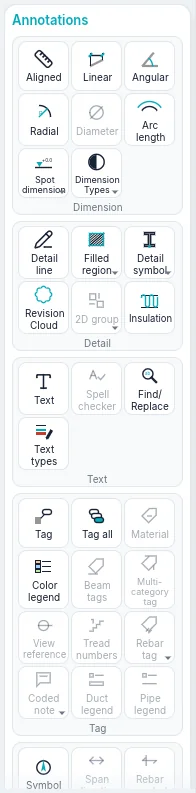
The Views tools
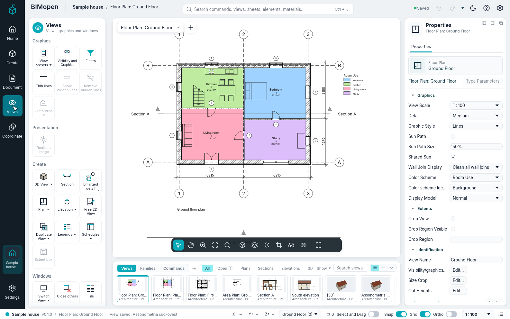
| Group | Tiles |
|---|---|
| Create | 3D View ▾ (Default 3D View, Save View), Plan ▾ (Floor Plan, Area Plan), Duplicate View ▾ (Duplicate, Duplicate with Detailing), Section SE, Elevation ▾ (Elevation EL, Framing Elevation), Enlarged detail DT (a callout), Free 2D View VD, Schedules ▾ (Schedule/Quantities, Material Takeoff, Sheet List, Note Block, Predefined schedules) |
| Graphics | Visibility and Graphics VG, Filters, View templates, Apply template to current view, Create template from current view |
| Windows | Switch View, Replicate, Cascade, Tile, Maximize, Close others, Panels |
Save View works only while a 3D view is open, and Duplicate with Detailing only for views that are not 3D. Under the tools, the Project Index card holds the whole tree of the project.
Every ▾ menu also lists, greyed, the entries not available yet; the command search finds them all.
The Settings tools
| Group | Tiles |
|---|---|
| Settings | Materials, Project information, Styles by Category, Line styles, Purge unused, Project units UN, Snap, and Additional settings (Line styles, Fill patterns) |
| Inquiry | Check: checks the openings and references of the model and reports at the command line |
Snap turns snapping on and off for the whole program: it is highlighted while on, as the Snap switch of the status bar. Additional settings ▸ Snaps… opens the Snap window: the length and angular increments, the object snaps and the overrides (see Snap).
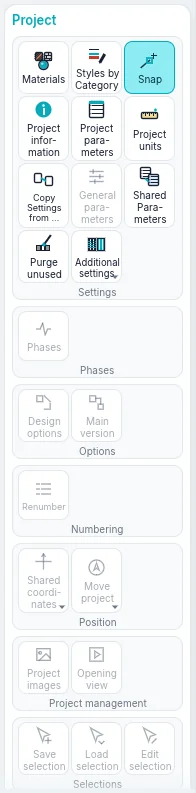
The contextual card

When you start a tool or select something, a card comes on top of the tool panel, whatever rail entry is open, with the name of what you are doing in the accent colour: Draw Wall while drawing walls, Selection: Walls with walls selected, Multi-Select with elements of different categories, Edit | … in the other modes. When the tool ends, or the selection is cleared, the card goes away; Esc or a click on empty space does the same.
It always has these groups:
| Group | Tiles |
|---|---|
| Properties | Properties: shows or hides the element panel; Type Parameters: the properties of the type of the selection, or of the next element the tool will place |
| Modify | Align AL, Offset OF, Mirror on Axis MM, Mirror on Line DM, Split Element SL, Split with Joint SG, Move MV, Copy CO, Rotate RO, Shorten/Lengthen TR, Shorten/Lengthen one element, Shorten/Lengthen several elements, Repeat in Series AR, Scale RE, Fix PN, Unpin UP, Delete (Del) |
Delete works only when something is selected. The selecting and modifying chapter describes the Modify tools.
Other groups appear for what is selected or for the tool:
| When | Group and tiles |
|---|---|
| Anything selected | Selection: Filter (see Selecting and modifying) |
| Doors or windows selected | Opening: Flip facing, Flip hand |
| Walls selected | Modify Wall: Link Top/Base (the walls rise to the roof above them), Unlink Top/Base |
| A level selected | View: Open plan |
| Sections or elevations selected | Section: Split Segment (sections only), Flip, Go to View |
| A callout selected | Detail: Go to View |
| Curtain walls selected | Curtain Wall: Curtain Grid, Mullion, Panel |
| Flooring or Roof tool | Draw: Boundary Line, Pick Walls |
| Stair or Railing tool | Mode: Finish Edit Mode; Draw: Run or Lines |
| Mullion tool | Placement: Grid Line, Grid Line Segment, All Grid Lines |
| A detail tool | The drawing shapes of the tool |
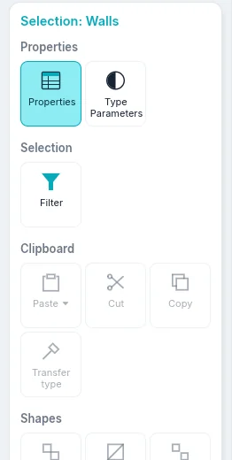
Options strip
While a tool works, a strip runs over the top of the view: the name of what you are doing, then the settings of the tool. They apply to the next elements you place.
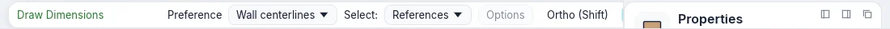
| Tool | Settings on the options strip |
|---|---|
| Wall | Height or Depth; the level the wall reaches, or Unconnected with its value; Alignment; Continue; Offset; Radius (greyed: curved walls are not available yet); Join at the ends and Automatic joining (greyed); Exterior on the left or Exterior on the right (the space bar swaps them) |
| Door, Window | Load Family; Model on site (greyed); Tag on Placement with Horizontal or Vertical, Leader and its length; Loaded tags… (greyed) |
| Object | Load Family; Model on site (greyed); Rotate after inserting: the object placed stays selected and Rotate starts |
| Roof | The shape: Gable, Hip or Flat; Slope, from 5° to 60°; Overhang, up to 2 m |
| Stair | Width, in millimetres; Railing Type, or None |
| Dimensions | What the cursor picks first on a wall: Wall centerlines or Wall faces |
| Enlarged detail (callout) | The scale of the new detail view, or Reference other view and the detail or free 2D view the callout points at (always on in a free 2D view) |
| Area Outline | Line or Pick lines; with Pick lines, Apply area rules or an Offset |
The Ortho and Snap switches of the status bar work for every tool that draws lines: Ortho keeps the segments horizontal or vertical, Snap catches endpoints, midpoints and intersections. With Ortho off, holding Shift while drawing gives the same constraint; with it on, Shift releases it.
Element panel
The element panel, on the right, shows and changes the parameters of what you are working on. Its header has the category and the name of what it shows, Close (which clears the selection) and More actions (⋯: Type Parameters and the actions of the contextual card). Under the header, its tabs:
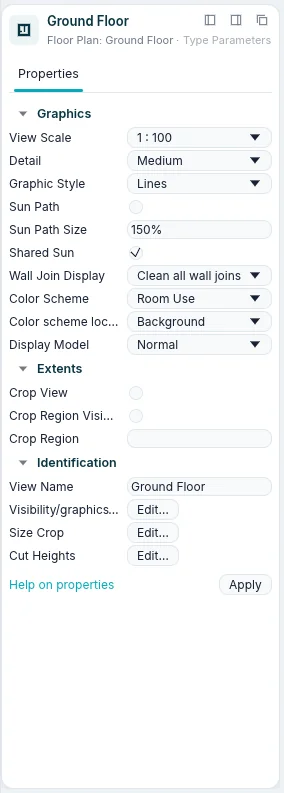
| Tab | What it holds |
|---|---|
| Properties | The type selector, then the parameters, in groups (Constraints, Graphics, Identification…). Click the name of a group to fold it. Values in grey are read-only: they are computed from the model. Apply, or Enter, confirms a value you are typing |
| Materials | For walls, floors and roofs: the layers of the type with their colours and thicknesses, and a preview of the layers |
| Classification | The category, the type and the IFC class |
| Relations | The level, the host, the doors and windows it hosts, the views and the schedules it appears in |
The type selector shows the family in small letters, the type underneath, and a preview of the type: walls, floors and roofs as their layers, doors, windows and components as a small picture. Click it to choose another type: the selected elements change type, or, while a tool is active, the next element gets that type. Open it to search the types by name; they are grouped by family, each with its preview. The arrow keys move, Enter picks, Esc closes the list.
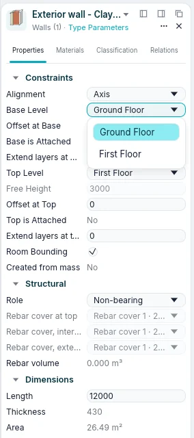
What the panel shows depends on the situation:
| Situation | The panel shows |
|---|---|
| Nothing selected, no tool | The properties of the active view (scale, detail, graphic style…), or of the view clicked in the Project Index |
| A tool active | The type of the next element, as New Wall, New Door… |
| One element selected | Its type and its instance parameters |
| Several elements of one category | Their number, as Walls (3) |
| Elements of different categories | Multi-Select, Common (5), and how many of each category, as 3 × Walls |
Lengths are written and read in the project's units (millimetres in a new project). You can type
a value with its unit, for example 2.7m.
Project Index
Views on the rail shows, under its tools, the Project Index: the views, schedules, sheets and families of the project in a tree. Click ⊟ or ⊞ to fold or unfold a branch.
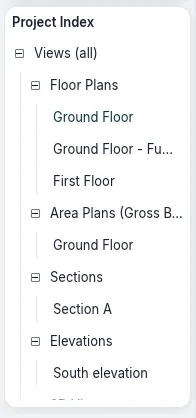
| Branch | What it contains |
|---|---|
| Views (all) ▸ Floor Plans | The floor plans of every level, from the lowest, and the callouts drawn in plans |
| Views (all) ▸ Area Plans (…) | The area plans, one branch per area scheme |
| Views (all) ▸ Sections, Elevations | The sections and the elevations |
| Views (all) ▸ Detail Views | The callouts drawn in sections |
| Views (all) ▸ 3D Views | {3D}, the default 3D view, and the saved 3D views |
| Views (all) ▸ Free 2D Views | The free 2D views |
| Schedules/Quantities | The project's schedules, then the predefined schedules |
| Sheets (all) | The sheets, as number - name |
| Families | The types of the project, by category: walls, doors, windows, floors, roofs, components and the others |
The branches of area plans, sections, elevations, detail views and free 2D views appear only when they have something in them. The active view is written in bold.
With a view:
- a click shows its properties in the element panel, without opening it;
- a double-click opens it;
- a right-click opens its menu: Open, Close (closes its windows), Duplicate View ▸ (Duplicate, Duplicate with Detailing), Apply view template…, Create view template from view…, Delete, Rename…, Properties.
The menu of a sheet has Apply view template to all views… instead of the two template items, and no Duplicate View. {3D} cannot be deleted or renamed.
With a schedule of the project, a click selects it, a double-click opens it, and the right-click menu has Open, Schedule Properties… and Delete. A predefined schedule opens with a click.
With a type, under Families, a double-click opens its type parameters; the right-click menu has Type Parameters, Duplicate…, Create Instance (starts the tool that places it, with that type) and Delete.
After a click in the Project Index, the keyboard moves in it: Up and Down go from row to row (the view's properties show in the element panel), Right opens a branch, Left closes it or goes up to the branch the row is in, Enter opens the view.
Views go on sheets from here too. Drag a plan, section, elevation, free 2D view, legend, saved 3D view or schedule onto the open sheet: its viewport follows the cursor and stays where you drop it. Or drop it on a sheet's name in the tree: the sheet opens and the viewport follows the cursor until you click. While you drag, the tree scrolls when the cursor nears its edge. The right-click menu of a sheet has Add View…. The views on a sheet are listed under it; the right-click menu of one has Remove from Sheet, and the menu of Sheets (all) has New Sheet…. In a 3D view the right-click menu also has Zoom to 3D Extents: the whole model, the elements hidden in the view too. A view already on a sheet is refused, with the reason on the command line; legends and schedules can go on several sheets. A saved 3D view is drawn on the sheet with the edges seen from its camera.
The right-click menu of a plan, section or free 2D view has Find Referring Views: the views that show its symbol and the sheets it is on; Go to View opens the one chosen.
Views and families strip
The strip under the drawing area has three modes, chosen with the buttons on its left:
- Views: live thumbnails of the views, grouped by All, Open (n), Plans, Sections, Elevations, 3D, Legends, Schedules and Sheets. The current view is framed, open views have an accent line. Click a thumbnail to open the view; right-click for the view's menu, with Open in the active window; drag it onto the open sheet, or onto a sheet's thumbnail, to place it there. + makes a new view: Default 3D View, Save View, Duplicate, Sheet or Schedule/Quantities.
- Families: one preview for each type, grouped by family category. Click a preview to place that type; drag it into a plan to insert it where you let go. A door or a window dropped near a wall goes into it, along it.
- Commands: the history of the command line. Click a line you typed to run it again.
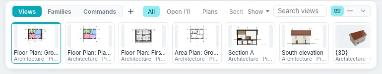
On the right, Show filters the thumbnails by discipline and phase, the search box by name, and three buttons set the size: Previews, Compact and Hide.
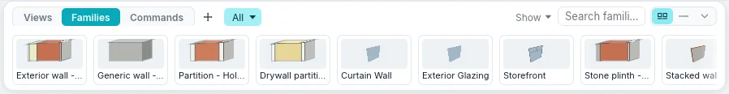
Panels
The element panel can move. Drag it by its header: it docks on the left or on the right of the drawing area, or floats where you let it go. The buttons at the top right of the panel dock it left, dock it right or make it float; Views ▸ Windows ▸ Panels shows or hides it and the other panels. Each panel stays where you put it in the next sessions.
While you drag a panel, only the places where it really docks are drawn, each as the panel it will become. The place under the pointer is drawn strongly, the others faintly. Elsewhere nothing is drawn, and the panel floats where you let it go.
Dialogs
Every dialog opens in the middle of the screen, each time it opens, even if it was moved the last time or the window has changed size. Once open, it stays where it is: drag it by its title bar to move it. A change inside it, such as the Preview switch, does not move it.
Every dialog has a fixed size, which does not change with its content. The exception is the dialogs built around a long list or table (materials, visibility/graphics, object styles, filters, line styles and patterns, fill patterns, line weights, schedule properties, project and shared parameters, keyboard shortcuts, purge unused, IFC export classes, view templates): dragging one of their edges makes them larger, never smaller than they first open nor larger than the screen, and the list grows with them. They open again in the middle with the last size given.
Drawing area and view windows
Every view you open is a window in the drawing area. A view opened again comes to the front; at least one window always stays open. At the top left of the view, the view selector shows its name: its menu lists the views and arranges the windows, and + beside it makes a new view. Views ▸ Windows arranges them too:
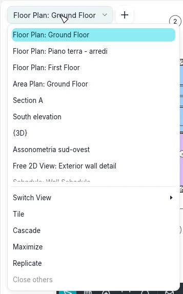
| Tile | What it does |
|---|---|
| Switch View | Lists the open windows; the active one is ticked |
| Replicate | Opens a second window on the active view, with its own zoom |
| Cascade | Overlapping windows, each with its title bar: drag a title to move a window, its edges to resize it |
| Tile | All the windows side by side, each with a title bar; the active one has a coloured title and frame |
| Maximize | The active window fills the drawing area; the others wait underneath |
| Close others | Closes every window except the active one |
| Panels | Shows or hides the Properties, the Project Index, the Command line, the Navigation bar, Keyboard Shortcuts and Recent Files |
Click in a window to make it active: the tools work in the active window, the others only show the model. In Tile and Cascade, the × on a window's title bar closes it. Ctrl+Tab goes to the window you used before.
Tile puts the active window at the top left and the others after it, from the most recently active; Switch View lists them in the same order. Tile again after working in another window and that window comes first.
Options ▸ User Interface ▸ Keyboard Shortcuts lists the commands with their shortcuts. Search a command by name, or Filter the list (All, All Defined, All Not Defined, All Reserved); select a command, type the keys in Press new keys and click Assign. The same keys may go to several commands: typed in the drawing area, the status bar shows the first, the arrow keys go through the others and Enter or Space runs the one shown; Export… writes every shortcut to an XML file and Import… reads such a file back as your shortcuts (a file naming no command here is refused, and your shortcuts stay); Remove takes away the keys you added. Your shortcuts are kept for the next sessions and start the command when typed, as the built-in ones do.
A tool never changes the active view by itself. Started in a view where it cannot work (a roof or a room in a 3D view, a level in a plan, an area outside an area plan), it opens Go to View: the views that suit it, with the plan of the active level chosen first. Open View opens the chosen view and starts the tool there; Cancel leaves everything as it was. Edit Boundary of a floor, roof, stair or railing, from a section or an elevation, asks the same way for a plan of its level, and a new section or elevation leaves the plan you drew it in active. Move, Copy, a linear Repeat in Series and Mirror on Line also work in sections and elevations: along the view; the axis is the vertical plane at right angles to the view through its first point, however it is drawn. A radial Repeat in Series works in plans and 3D views: in a section or an elevation it stays chosen, but its clicks make nothing and the status bar asks for Linear.
Views in separate windows
A view can leave the drawing area: Separate window in its menu (right-click it in the Project Index, on its thumbnail in the views strip, or on the title bar of a tiled window), or drag the title bar of a tiled or cascaded window out of the drawing area. On the computer the view opens in a system window of its own, which you can move to another monitor too, resize and maximise; on the web it floats in the page, because the browser opens no other windows. A view floating in the program also has System window, to move it into a system window.
You can separate several views at once. Each keeps its tools, its view bar and, in 3D, its orientation cube; the selection shows in all of them, and the active view is the last one you clicked. Back to the main window, at the top of the view, puts it back in the drawing area; a floating view also goes back when dragged onto the band at the top of the drawing area, which lights up. Closing the system window brings it back the same way. Where each separate view was stays with the project, and when it opens again the separate views come back to their places.
Drawing in every view
A wall is drawn the same way in a plan and in a 3D view, on the level's plane: from the first click the wall being drawn follows the cursor, in the plan as its footprint and in 3D as its see-through solid, at its height and thickness; a dashed line carries its axis on, and others hold it in line with the points of the chain already clicked. The temporary dimension, blue with its witness lines and ticks, gives the length and the angle; type a length and press Enter to draw the wall that long. The snaps (endpoints, midpoints, intersections, perpendicular, other walls' faces and axes) work in 3D too. The wall selected in a 3D view shows, as in a plan, its temporary dimensions, the flip arrows and the ends to drag. In sections and elevations a wall is not drawn: Go to View offers a plan or the 3D view.
Roofs and floors are drawn in the 3D view too, on the plane of their level: Pick Walls takes the wall under the cursor (its top lights up in orange, Tab takes the whole chain), the lines are drawn with every sketch tool and with temporary dimensions, and Edit Footprint of a roof or a floor opens its sketch in 3D. Edit Boundary of a wall works in 3D on the wall's plane, and in a section or elevation that sees it face on.
While you draw or edit a sketch you can switch views (thumbnails, Project Index, separate windows): the tool stays active and goes on in the new view if it can work there. A chain of walls begun in a plan goes on in 3D from its last point, and a profile sketch begun in an elevation goes on in 3D. The wall being drawn and the sketch show in every open view at once.
View bar
At the bottom centre of every view, a dark bar of buttons:
| Button | What it does |
|---|---|
| Select and modify | Ends the navigation mode, back to selecting, Esc |
| Pan, Orbit (3D), Zoom | With one on, the left button drags the view; Esc ends it |
| Zoom to Fit | Fits the whole view in the window, Home |
| Zoom Options | The zoom menu, see below |
| The graphic style | Wireframe, Lines, Shaded, Shaded with Edges, Flat Colors |
| The detail | Coarse, Medium or Fine |
| Sun and shadows | In 3D views, the sun and its shadows |
| Crop | Crop View crops the view to its crop region, or stops cropping; Show Crop Region shows or hides its frame |
| Isolate Temporarily | Hides or isolates elements or categories in this view until you reset it; framed while active |
| Reveal Hidden | Shows the hidden elements, to show them again |
| Full screen | The view alone in the window; Exit full screen comes back |
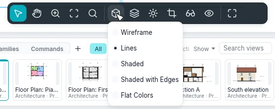
The scale of the view is on the right of the status bar, for example 1 : 100: it opens the
list of scales; under Custom type another one, as 1 : 75, and press Enter. A sheet has
no scale of its own: its views have theirs.
Zoom
Zoom Options, on the view bar, opens the zoom menu: Zoom In, Zoom Out, Zoom in Region (drag a rectangle on the view; Esc gives up), Zoom Out (2x), Zoom to Fit, Zoom All to Fit (every open window), Zoom Sheet Size (the view at the size it prints), and Previous Pan/Zoom and Next Pan/Zoom, which go back and forth through the views of that window. Typed: ZR, ZO, ZF, ZA, ZS, ZP.
The navigation wheel is not available.
Moving around in the views
| In plans, sections, elevations and sheets | |
|---|---|
| Mouse wheel | Zooms in and out at the cursor |
| Drag with the middle button | Pans |
| Drag with the left button | A selection window, or moves the selected elements (Selecting and modifying) |
| Home | Fits the whole view in the window |
| In 3D views | |
|---|---|
| Drag with the right button, or Shift + middle button | Orbits around the model |
| Drag with the middle button | Pans |
| Drag with the left button | A selection window, or moves the selected elements |
| Mouse wheel | Zooms in and out |
| Home | Fits the whole model in the window |

A small tripod in the lower corner of the 3D view shows the directions of the axes: X red, Y green, Z blue. A saved 3D view remembers where you left it. On the selection, the move arrows let you drag it: drag an arrow to move along it, the centre to move freely in plan; the distance shows as you drag, and the release moves as Move does.
In 3D, the wheel zooms keeping the model point under the cursor in place, and the orbit turns about the centre of the selection, or about the point the view looks at when nothing is selected.
The Orientation cube, in the top corner of the 3D view, turns with the model. Its edges and corners are bevelled and every part is a target of its own: the six faces (TOP, BOTTOM, FRONT, BACK, RIGHT, LEFT, their names written on them in perspective and turning with them) look straight at that side; the twelve edge strips look from between two sides; the eight corner triangles from between three (an isometric view). The part under the pointer is tinted with the highlight colour, the one the view looks from now stays highlighted; a click turns the view there in a brief transition. Drag the cube to orbit.
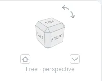
Under the cube the view's orientation is written: Front · perspective, Top – Front · perspective, Isometric · perspective, or Free · perspective when the view looks from no part of the cube.
When a face is seen straight on, four triangles round the cube (Turn up, Turn down, Turn left, Turn right) turn the view a quarter to the face beyond that side. The two curved arrows at the top right, Roll left and Roll right, turn the picture a quarter turn counterclockwise or clockwise.
The small house button at the bottom left, Starting view, goes back to the starting view; right-click it for Set as starting view, which makes the present view the starting one (each 3D view keeps its own, with the project). The small button at the bottom right, Cube menu, or a right-click on the cube, opens the menu: Orthographic / Perspective (for now the view is perspective only: Orthographic is greyed, «Not available yet»); Set as starting view; Zoom to Fit, which fits the model in the window; Options…, which opens the Orientation cube page of Options. Right to left (Arabic) the cube sits at the top left and the two small buttons change sides; the arrows stay where they point.
The context menu of a view
Right-click in a view while no tool is active. If the cursor is on an element that is not selected, the element is selected first. The menu has, with a selection, the modify commands first (Move, Copy, Rotate, Align, Offset and the others), then:
- Cancel: clears the selection;
- Select All Instances ▸ Visible in View or ▸ In Entire Project: the elements of the same type; Select Previous: the selection made before;
- Hide in view ▸ Elements or ▸ Category: hides the selected elements, or their whole categories, in this view;
- Custom Graphics ▸ By category…: opens Visibility and Graphics on the categories of the selection;
- Visibility and Graphics….
While a tool is active, a right-click opens the tool's menu instead, and the step in progress stays: Cancel (what Esc does, which still cancels the step), Repeat [command], Snap Overrides ▸ (the snap of the next point, as the two-letter keys do; in every view, see Snap), Zoom in Region, Zoom Out (2x), Zoom to Fit, Previous Pan/Zoom, Next Pan/Zoom and Properties. It is the same in plans, sections, elevations, 3D views and on sheets. With the menu open, Esc or a click in the view only closes it.
Snap
Additional settings ▸ Snaps… (in the BIMopen style the Snaps… command) opens the Snap window, the same in both styles:
- Snaps Off turns everything off (as the status bar's Snap switch, which stays as it was when the program opens again).
- Length dimension snap increments and Angular dimension snap increments, each with its box: values separated by semicolons (by default 1000; 100; 10 mm and 90°; 45°; 15°; 5°; 1°). The zoom chooses the step: zoomed in, finer steps.
- Object snaps: a box for Endpoint, Midpoint, Nearest, Work Plane Grid, Quadrant, Intersection, Center, Perpendicular, Tangent and Remote Objects, with their two letters; Check all and Check none. With Nearest off, the line under the cursor still offers its ends and its midpoint, even far away. Remote Objects (off at first) lines the point up, across or along, with the ends of lines far away, with a dashed guide.
- Temporary overrides: the list of the two letters that hold for one point.
- Restore Defaults puts everything back as it was at first.
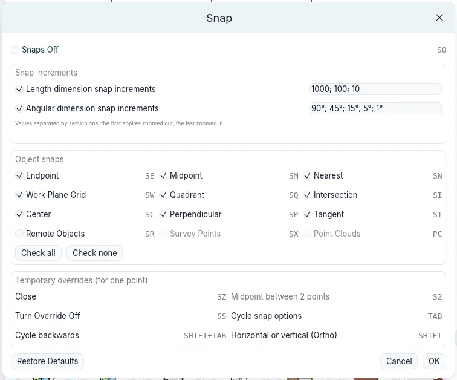
The settings belong to the program, not to the project: they are kept between sessions.
While drawing from a point (walls, lines, grids, reference planes, sketches, and Rotate's
second ray) the segment snaps its direction the same way in every view: horizontal or vertical,
parallel or perpendicular to a line nearby, or a multiple of the angular increment the zoom gives;
only when the cursor is a few pixels from that direction, otherwise the angle stays free. A dashed
guide follows the direction, an arc with the value shows the angle, and the status bar says for
instance Snap: Angle 30° · step 15°. The length is rounded to the length increment. Angle
measured from, on the options bar, counts angles from the view's Horizontal axis or from the
Previous segment. In the 3D view everything is measured on the work plane (the level's plane).
At the command line snap {"angles":[45,15],"objects":{"quadrant":false}} changes the settings and
snap alone shows them.
The anglesnap 0,0 3,0.02 command (also through MCP, and snap with two points) returns the
direction a segment snaps to, by the same rules as every view.
At the top of the menu, Repeat [command] starts the last tool you used again; Enter does the same when no tool is active and the command line is empty. The menu is the same in plans, sections and 3D views.
Command search and command line
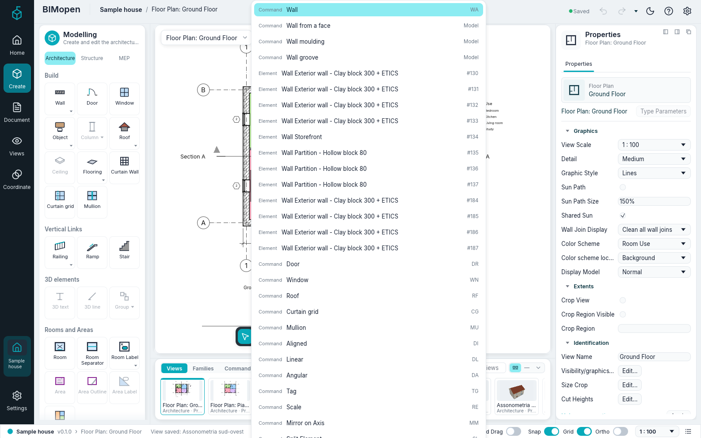
Press Ctrl+K, or click the search box in the middle of the top bar, and type a few letters: the list shows the commands, views, sheets, schedules, elements and materials that match. Click a result, or choose it with the arrow keys and press Enter: a command starts, a view opens, an element is selected and shown, a material opens in Materials. The search finds every command of the tool panel, the contextual card's too (with a view selected on a sheet, «activate» finds Activate View), and runs it as its tile does.
The search box is also the command line. You do not need to click it: whatever you type in a
view while no field is being edited goes there. Enter runs a keyboard shortcut (WA, DR,
ZF…) or a command with its arguments (wall 0,0 5,0) as typed; Up and Down bring back
the lines typed before. The log of what has been done, the commands run, their results and the
errors in red, is in Command log at the right end of the status bar and in the Commands
mode of the strip. The command line chapter describes the commands.
Status bar
On the left, the status bar shows the project, the version and the active view, then:
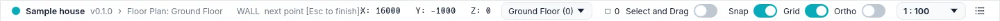
- while a tool is active, what the tool expects, for example
WALL next point [Esc to finish]:; - with no tool, the category and the type of the element under the cursor, as Walls : Exterior wall - Clay block 300 + ETICS;
- while you drag, the length of the move, as Move: 1500;
- otherwise the last line of the command log.
On the right: the coordinates of the cursor (X, Y, Z) in metres; the active level, whose menu opens the plan of another level; the number of selected elements, which opens Filter; the switches Select and Drag (drag elements without selecting them first), Snap, Grid and Ortho; the scale of the view; and Command log.
Selecting, in short
The selecting and modifying chapter describes selection in full. The essentials:
- click an element to select it; click an empty point to clear the selection;
- Ctrl + click adds an element to the selection, Shift + click takes it out; Tab highlights the next element under the cursor, or a chain of joined walls;
- drag from left to right to select what is entirely inside the rectangle, from right to left to select what it touches;
- drag a selected element to move it;
- Ctrl+A selects the elements of the open plan's level, or of the whole model in a 3D view; Del deletes the selection; Esc clears it.
On a touch screen the same is done with the fingers and the pen: see touch mode.